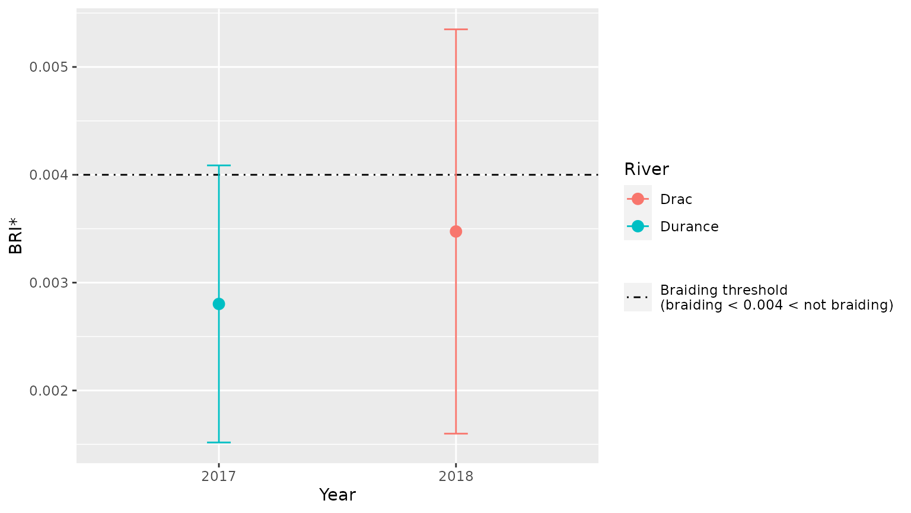
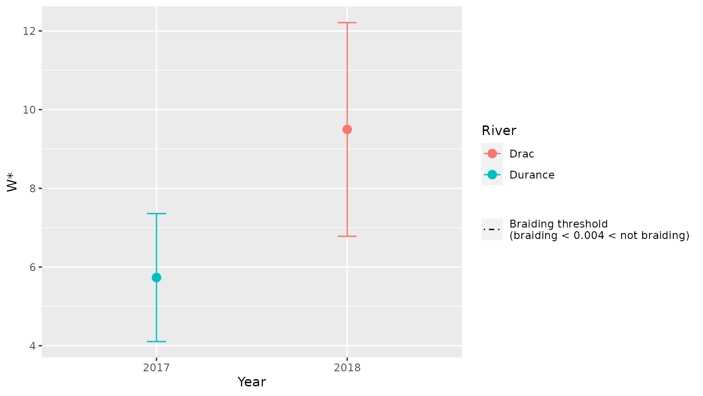

braidIndex.RmdSeveral datafiles must be provided with the following format:
un tableau contenant une liste des points avec, en colonnes :
Une différence doit être réalisée entre la végétation pionnière et la végétation mature afin de prendre en compte de la végétation pionnière seulement.
La catégorie “Eau” doit contenir les chenaux en eau seulement présents dans la banque active, cela n’inclut pas les affluents.
Pour traiter de multiples rivières ou tronçons, un tableau contenant les informations sur les tronçons d’études et leurs bassins versants est requis. Ce tableau est ici appelé “Infos”.
Le tableau doit contenir :
afin de charger automatiquement les fichiers dans la boucle de code et traiter tous les fichiers automatiquement.
Les fichiers doivent être au format .txt et séparé par ;
Infos=tibble::as_tibble(readxl::read_excel("../data-raw/Infos.xlsx")) %>%
mutate(Year=as.factor(Year))
Infos
#> # A tibble: 2 × 6
#> River Reach Year Area Points_space File
#> <chr> <chr> <fct> <dbl> <dbl> <chr>
#> 1 Drac Chabottes 2018 253 1 Drac_Chabottes_2018.txt
#> 2 Durance Brillanne 2017 7850 1 Durance_Brillanne_2017.txt
data_Drac=braidIndex_read(paste0("../data-raw/",Infos$File[1]))
head(data_Drac)
#> FID ORIG_FID ID_XS Z TYPO_VEGE NAME
#> 1 0 0 232 1029.83 pioneer vegetated islands
#> 125 124 1 231 1029.59 water
#> 126 125 1 231 1029.59 water
#> 127 126 1 231 1029.60 water
#> 128 127 1 231 1029.59 water
#> 129 128 1 231 1029.59 water
result_Drac=braidIndex_one(data_Drac,
area=Infos$Area[1],
points_space=Infos$Points_space[1])
#> Warning in braidIndex_one(data_Drac, area = Infos$Area[1], points_space =
#> Infos$Points_space[1]): The cross-sections with ID 232 contain only one measure.
result_Drac
#> # A tibble: 12 × 6
#> Nb_mean_meas XS_onlyone variable type stat value
#> <dbl> <dbl> <chr> <chr> <chr> <dbl>
#> 1 109.4 0.4310 BRI_mean BRI mean 0.003474
#> 2 109.4 0.4310 BRI_SD BRI SD 0.001875
#> 3 109.4 0.4310 BRI_min BRI min 0.001139
#> 4 109.4 0.4310 BRI_max BRI max 0.01360
#> 5 109.4 0.4310 W_mean W mean 9.497
#> 6 109.4 0.4310 W_SD W SD 2.715
#> 7 109.4 0.4310 W_min W min 0
#> 8 109.4 0.4310 W_max W max 15.60
#> 9 109.4 0.4310 WAC_mean WAC mean 108.4
#> 10 109.4 0.4310 WAC_SD WAC SD 30.98
#> 11 109.4 0.4310 WAC_min WAC min 0
#> 12 109.4 0.4310 WAC_max WAC max 178
result=braidIndex(Infos,rel_path="../data-raw/")
#> Warning in .f(rivdata = .l[[1L]][[i]], area = .l[[2L]][[i]], points_space
#> = .l[[3L]][[i]], : The cross-sections with ID 232 contain only one measure.
result
#> # A tibble: 24 × 12
#> River Reach Year Area Points_space File Nb_mean_meas XS_onlyone variable
#> <chr> <chr> <fct> <dbl> <dbl> <chr> <dbl> <dbl> <chr>
#> 1 Drac Chabo… 2018 253 1 ../da… 109.4 0.4310 BRI_mean
#> 2 Drac Chabo… 2018 253 1 ../da… 109.4 0.4310 BRI_SD
#> 3 Drac Chabo… 2018 253 1 ../da… 109.4 0.4310 BRI_min
#> 4 Drac Chabo… 2018 253 1 ../da… 109.4 0.4310 BRI_max
#> 5 Drac Chabo… 2018 253 1 ../da… 109.4 0.4310 W_mean
#> 6 Drac Chabo… 2018 253 1 ../da… 109.4 0.4310 W_SD
#> 7 Drac Chabo… 2018 253 1 ../da… 109.4 0.4310 W_min
#> 8 Drac Chabo… 2018 253 1 ../da… 109.4 0.4310 W_max
#> 9 Drac Chabo… 2018 253 1 ../da… 109.4 0.4310 WAC_mean
#> 10 Drac Chabo… 2018 253 1 ../da… 109.4 0.4310 WAC_SD
#> # … with 14 more rows, and 3 more variables: type <chr>, stat <chr>,
#> # value <dbl>
braidIndex_plot(result,index="BRI", position=Year, color=River)
braidIndex_plot(result,index="W", position=Year, color=River)
#> Warning: Removed 2 rows containing missing values (geom_hline).
When using this package, please refer to the following article:
Devreux, L., Chapuis, M., Belletti, B., submitted. Hydromorphological analysis on restored Alpine braided rivers, Geomorphology.
See also: